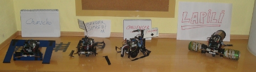
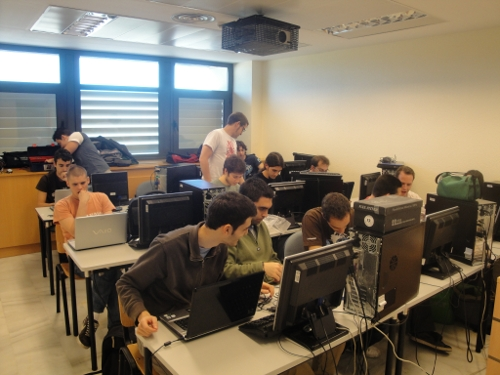
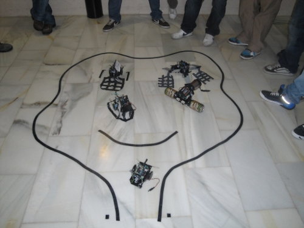

Este año estoy impartiendo la asignatura de Robótica en el grado de Ingeniería Informática en la Universidad Carlos III de Madrid (UC3M), en el campus de Colmenarejo. Aprovechando que hay pocos estudiantes, la teoría decidí dividirla en dos partes: la teoría propiamente dicha y casos de estudios donde los estudiantes experimentan con robots reales.

El primer caso de estudio es sobre la parte de robótica móvil. Los estudiantes han montado el robot Skybot, lo ha programado y han participado en un versión reducida del concurso del mogollón.

En este vídeo se puede ver una “pachanga” en la que se están probando los robots:

Y en este otro se puede ver el “peculiar” comportamiento implementado en el robot Bender-Sifredi 😉

Todas las fotos, vídeos, grupos y más información están disponibles en esta página del wiki.
El segundo caso de estudio será sobre Robots Modulares.
¿Robot wars en clase?
Si 🙂